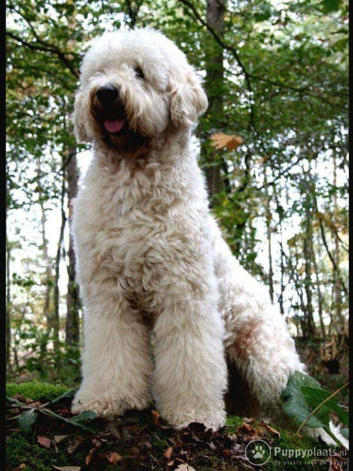

Oorsprong
Gebruiksdoel
De labradoodle werd oorspronkelijk gefokt om te dienen als hypoallergene assistentiehond.
Geschiedenis
De Australiër Wally Conron is de geestelijke vader van de labradoodle, hoewel hij in recente interviews aangeeft daar niet meer zo trots op te zijn.
Conron, een fokker van de Royal Victorian Guide Dogs Association, kruiste voor het eerst een poedel met een labrador in 1989. Zijn doel was om de een hond te creëren die de vachtstructuur heeft van een poedel en de "will to please" van de labrador retriever. Het was ook Conron die de naam labradoodle bedacht heeft.
De inspiratie voor deze kruising kwam van een Hawaiäans koppel die Wally Conron eind jaren '80 hebben gevraagd om voor hun een hulphond te fokken die bij hun zouden passen. De vrouw van het koppel was namelijk slechtziend en had een blindengeleidehond nodig, maar haar echtgenoot was allergisch aan de meeste honden.
